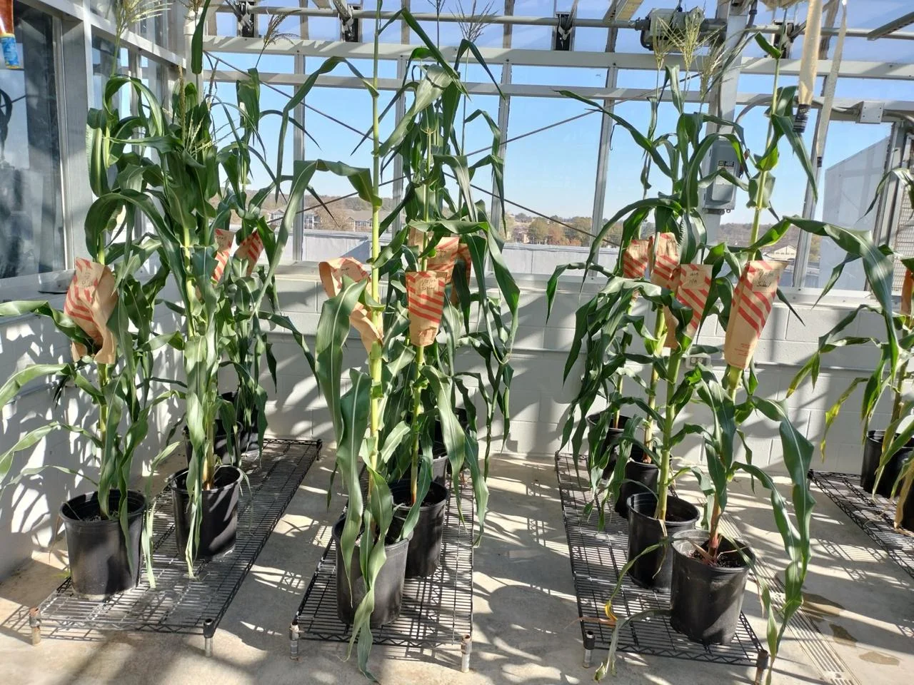
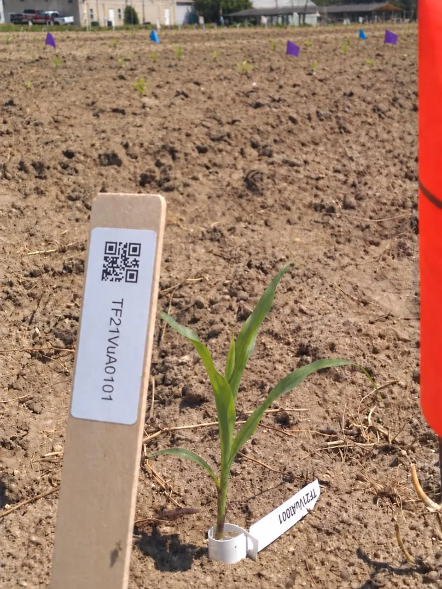
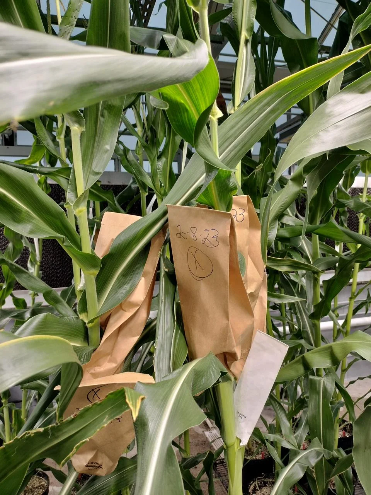
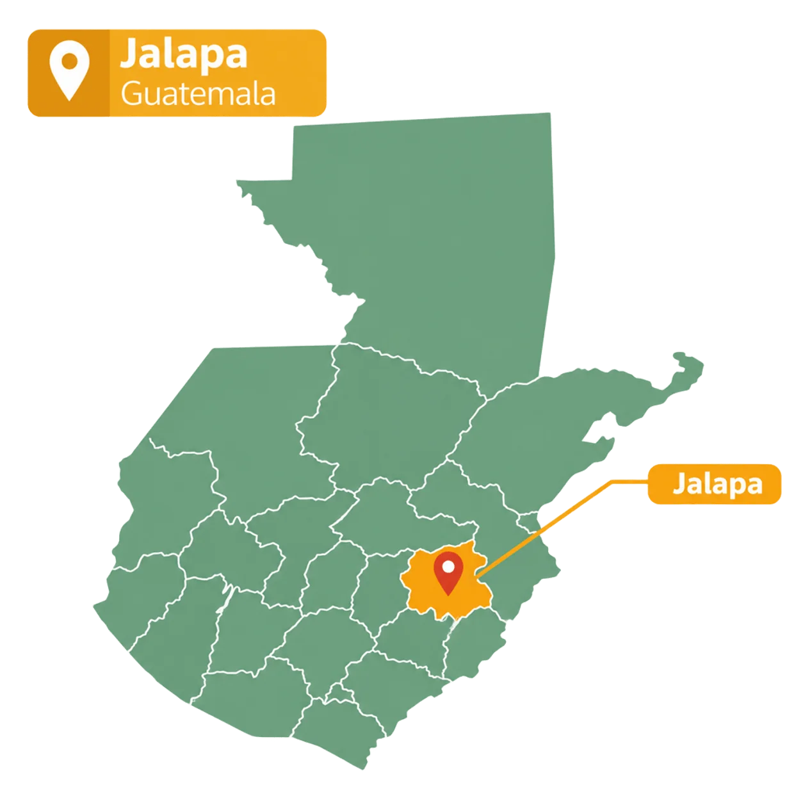
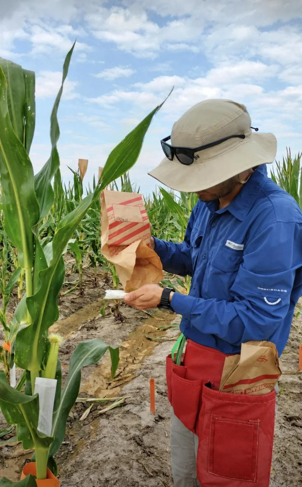
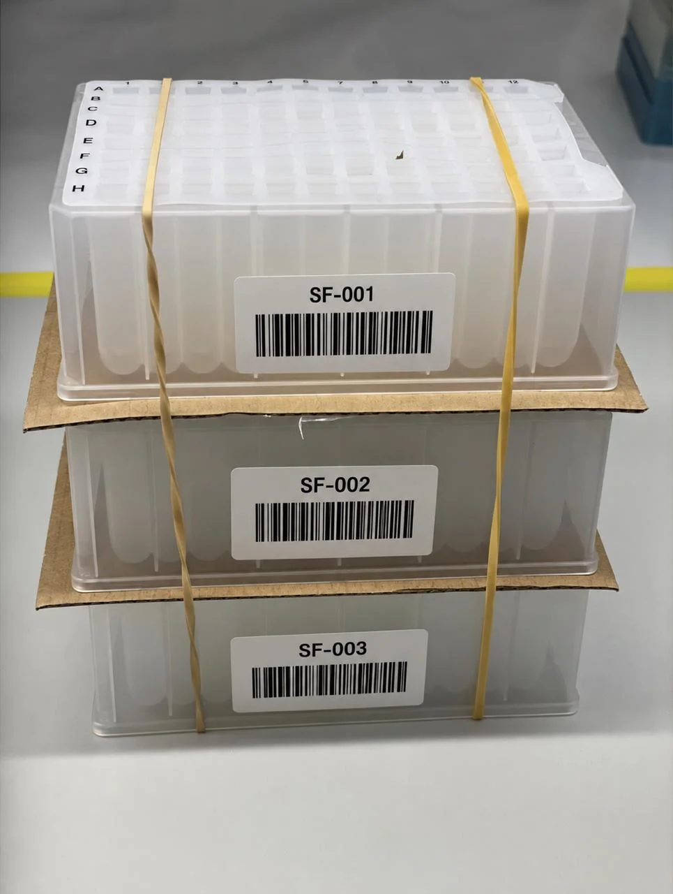

SeedForge
Genetics provides winter nursery and breeding services in Guatemala to help you advance plant lines between growing seasons. Keep your program moving forward.

About us
SeedForge Genetics combines maize breeding experience with winter nursery and research services in Guatemala. We support breeding programs through hand pollination, hybrid creation, seed increase, and phenotyping, helping them advance plant lines between growing seasons. When needed, we also coordinate genotyping with third-party providers in the United States.

Our Vision
To be a trusted partner for plant breeding programs seeking to shorten development timelines and bring improved varieties to the field sooner.
Our Mission
To help plant breeding programs move faster by providing reliable winter nursery services, breeding support, and access to genotyping that keep promising materials advancing throughout the year.

Location
Based in Guatemala, SeedForge Genetics provides winter nursery services that help breeding programs advance their materials between growing seasons. We tailor our support to each program’s goals, helping teams keep their breeding work moving year-round.

Our Services
We provide hand pollination, RCI, hybrid creation, phenotyping, and genotyping services to support different stages of the breeding process. Whether you need to make new crosses, advance plant lines, or collect data for selection, we work with your team to meet your program’s goals.
Hand Pollination
→

Genotyping
Contact us
Tell us about your breeding program and what you want to accomplish this season. Contact SeedForge Genetics to discuss your project, timeline, and the winter nursery services that best fit your needs.